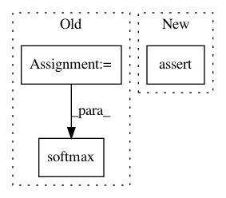

78d7b1d209c8b5427071d75a9cb8618cf585226b,python/mxnet/ndarray/numpy_extension/_op.py,,masked_softmax,#Any#Any#Any#Any#Any#,137
Before Change
neg = -1e18
if _np.dtype(dtype) == _np.float16:
neg = -1e4
data = np.where(mask, data, neg)
logits = (softmax(data, axis=axis) / temperature) * mask
else:
logits = softmax(data, axis=axis) / temperature
return logits
After Change
array([[0.00669285, 0. , 0.00669285, 0. , 0.00669285],
[0.9933072 , 0. , 0.9933072 , 0. , 0.9933072 ]])
assert data is not None and mask is not None, "Missing input data and mask"
return _api_internal.masked_softmax(data, mask, axis, temperature, normalize)
// pylint: disable=too-many-arguments
In pattern: SUPERPATTERN
Frequency: 3
Non-data size: 3
Instances
Project Name: apache/incubator-mxnet
Commit Name: 78d7b1d209c8b5427071d75a9cb8618cf585226b
Time: 2021-04-02
Author: 69359374+barry-jin@users.noreply.github.com
File Name: python/mxnet/ndarray/numpy_extension/_op.py
Class Name:
Method Name: masked_softmax
Project Name: senarvi/theanolm
Commit Name: ee37cc5236f3a2435c02dfe13fa2d9a743aeef17
Time: 2016-09-22
Author: seppo.git@marjaniemi.com
File Name: theanolm/network/softmaxlayer.py
Class Name: SoftmaxLayer
Method Name: create_structure
Project Name: jadore801120/attention-is-all-you-need-pytorch
Commit Name: 002815545bf743d0bf2b9d172af047b37e20b6e9
Time: 2017-06-24
Author: jadore801120@gmail.com
File Name: transformer/Modules.py
Class Name: ScaledDotProductAttention
Method Name: forward